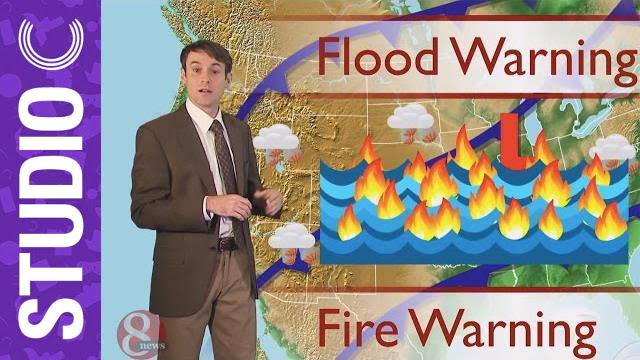
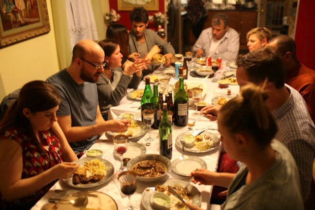

Como anda o clima na sua mesa de trabalho?
Certa vez em uma reunião de trabalho comentávamos sobre maneiras de saber se as coisas andavam bem na equipe. Andar bem no sentido entrosamento entre as pessoas, se elas ainda se suportavam e davam conta de trabalhar juntas, se a pressão do projeto estava influenciando ou qualquer outro fator. Respondi que, para mim, o clima da mesa é um dos principais indicadores de o quão bem um time pode estar.
Tormentas, terremotos e um arco-íris

Um trabalhador comum no Brasil passa em média quase 1/3 da sua vida no ambiente de trabalho, seja qual for este ambiente.
Considerando um contexto de um time de desenvolvimento de software, em um ambiente ágil, o ato de colaborar é uma necessidade básica. E é comum neste tipo de ambiente encontrar uma disposição da equipe no que chamamos de Mesa de Jantar*. Assim como o nome diz, neste tipo de disposição as pessoas se sentam ao redor de uma mesa, com vista para todos. Esta organização favorece a interação entre as pessoas, a conversa flui e todos tem contato visual com todos. Sem esforço adicional. Longe de ser aquele ambiente onde cada um tem a sua baia, quase uma propriedade privada.

Também pode parecer óbvio, mas só pra garantir que alguém já pesquisou isso antes, há alguns estudos[1] [2] que indicam que a quantidade de afeto demonstrada dentro de uma equipe está diretamente ligada ao sucesso que esta equipe vai alcançar.
Vale observar então alguns pontos, como por exemplo:
As pessoas do time se cumprimentam quando chegam para trabalhar? Cumprimento de verdade, onde todos entendem a saudação e respondem, por exemplo. Caso nem se cumprimentarem, já pode desfazer o time aí mesmo #ficaadica
Vez ou outra o time sai junto para almoçar? Ou para algum outro tipo de refeição?"Ah, mas eu não sou obrigado a comer naquela espelunca que vocês vão!" #meajudaateajudar
Em alguns momentos do dia as pessoas na mesa fazem algum tipo de piada, por pior que seja, e as pessoas sorriem
O time tem alguma atividade fora do ambiente de trabalho, como ir a um bar, correr de kart, visitar uma exposição ou qualquer outro tipo de atividade que seja longe do escritório?Há empresas que destinam uma verba para as equipes investirem em 'Team Outings'
Recentemente um colega de time defendia que, caso ele desse um espirro e ninguém respondesse com um sonoro saúde, tínhamos um claro sinal de que ninguém ao seu redor prezava por ele. Bom, nem tanto, mas segue a mesma ideia =)
Seguramente existem outros aspectos aí, mas vale o exercício para entender como anda a sua equipe.
Mas então o lance é estimular que as pessoas sejam "amigas"?
Bom, é mais ou menos por aí. Eu costumo dizer que a única pessoal que eu escolhi** nessa vida foi a minha esposa. Ou seja, não temos a obrigação de gostar de todo mundo. O que não quer dizer que você possa prezar por uma boa convivência no âmbito profissional.
* Carece de referências
** Eu a escolhi, mas se ela também não me escolhesse, não adiantaria de nada.